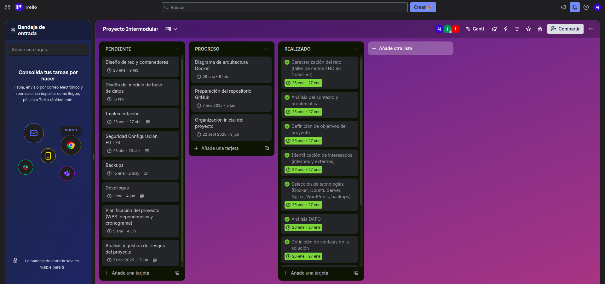
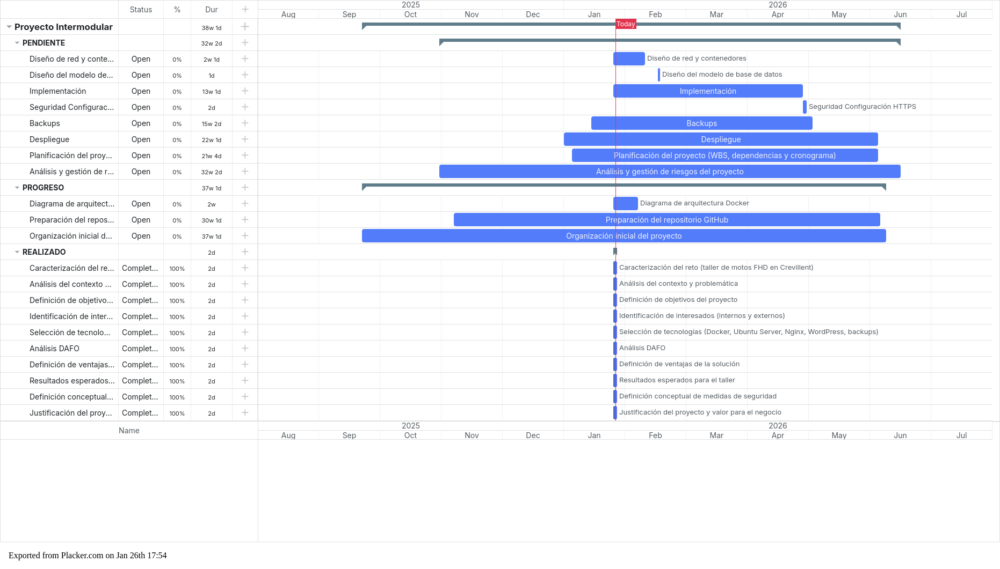

03 - Planificación
1. Planificación del proyecto
La planificación del proyecto se ha organizado en función de un equipo de trabajo compuesto por tres integrantes.
Cada miembro asume un rol principal, aunque existe colaboración puntual entre roles para garantizar la coherencia y correcta integración del proyecto.
1.1 Organización del equipo
El equipo de trabajo se estructura en los siguientes roles:
- Responsable de infraestructura y sistemas
- Responsable de la base de datos
- Responsable de diseño de aplicaciones y seguridad
Cada rol tiene asignadas tareas específicas, detalladas a continuación.
Equipo y roles
- Jesús: Responsable de la instalación,administración y mantenimiento de tanto el Ubuntu server HOST, como de las redes y contenedores gestionados en docker.
- Jose Carlos: Responsable de la creación,mantenimiento y gestión de la base de datos adapatada a las necesidades pertinentes del taller.
- Israel: Responsable de el diseño de la página web y de el firewall personalizado del servidor .
- Tutor del proyecto: supervisión y validación de los entregables.
1.2 Distribución de roles y responsabilidades
Rol 1: Responsable de infraestructura y sistemas
Este rol se encarga del diseño, implementación y mantenimiento de la infraestructura técnica del proyecto. En estos aspectos destacamos el mantenimiento del Ubuntu Server mas el de docker y sus contenedores y volúmenenes.
Funciones principales:
- Instalación y configuración del sistema operativo Ubuntu Server.
- Instalación y configuración de Docker en el servidor.
- Diseño de la arquitectura de contenedores.
- Creación y gestión de redes Docker (red pública y red privada).
- Configuración de volúmenes persistentes para contenedores.
- Implementación de medidas básicas de seguridad del sistema.
- Configuración del acceso remoto seguro mediante SSH.
- Gestión de certificados SSL/TLS para habilitar HTTPS.
Rol 2: Responsable de la base de datos
Este rol se centra en la implantación de la implamntación y la gestión de la base de datos.
Funciones principales:
- Instalación y configuración del contenedor de MySQL.
- Diseño y creación de la base de datos relacional.
- Definición de tablas, claves primarias y claves foráneas.
- Integración de WordPress con la base de datos MySQL.
- Verificación del correcto acceso a la base de datos desde la aplicación.
- Gestión de usuarios y permisos dentro de la base de Datos.
Rol 3: Responsable de diseño de aplicación y seguridad.
Este rol se encarga de el diseño de la página Wordpress y de la seguridad a nivel de internet del host.
Funciones principales:
- Diseñador de la página web a nivel de frontend y backend.
- Verificación de correcto acceso a Wordpress desde la web.
- Correcto uso de nftables para minimizar la exposición de puertas no deseadas al servidor.
1.3 Planificación por fases
El desarrollo del proyecto se divide en las siguientes fases:
Fase 1: Análisis y planificación
- Definición del alcance del proyecto.
- Asignación de roles y responsabilidades.
- Análisis de requisitos funcionales y no funcionales.
Fase 2: Diseño técnico
- Diseño de la arquitectura del sistema.
- Diseño de la infraestructura basada en contenedores.
- Diseño del modelo de datos y del diagrama entidad–relación.
Fase 3: Implementación
- Despliegue del servidor Ubuntu.
- Configuración de Docker, redes y volúmenes.
- Implantación de WordPress y MySQL.
- Configuración de seguridad y HTTPS.
Fase 4: Pruebas y validación
- Pruebas de funcionamiento de la aplicación.
- Validación del acceso a la base de datos.
- Revisión de seguridad básica del sistema.
Fase 5: Documentación y entrega
- Redacción final de la documentación.
- Publicación en GitHub Pages.
- Preparación de la entrega final del proyecto.
1.4 Coordinación y seguimiento
El equipo realiza reuniones periódicas para revisar el avance del proyecto, detectar incidencias y coordinar las tareas entre los distintos roles.
Las decisiones técnicas relevantes se documentan y se consensúan entre los miembros del equipo.
Para ello realizamos uso de herramientas como Trello: 
Y como método de régistro mas visual cronológicamente disponemos de un diagrama de gantt que refleja los tiempos tomados para el avance de el mismo. 